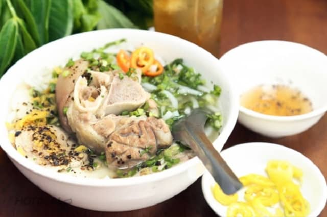

3. Món bánh Canh Trảng Bàng
Bánh canh Trảng Bàng cũng là món ăn không thể thiếu của người dân Sài Gòn. Bánh canh có nguồn gốc từ Tây Ninh nhưng giờ đây nó trở thành món ăn không thể thiếu của người dân Sài Gòn. Dễ dàng đi vào trong danh sách ẩm thực phong phú của Sài Gòn và thu hút được nhiều du khách khi đến đây đều muốn thưởng thức.
Thoạt nhìn qua thành phần khá đơn giản, chỉ bao gồm thịt nạc và móng giò. Tuy nhiên sự tinh tế, hấp dẫn ẩn chứa bên trong các nguyên liệu mà khi nếm thử người ăn mới có thể cảm nhận được hết sự tinh túy của bánh canh. Những miếng thịt luộc để dùng với tô bánh canh thường là thịt đùi heo, được luộc chín mềm nhưng không bị rã rục. Những sợi bánh canh trắng ngần được làm từ gạo nàng thơm sau ép thành những cọng bánh canh dẻo, dai, trắng muốt.

Điểm nhấn để tạo nên sức hút của món bánh canh chính là nước dùng. Nước dùng thường được nấu từ xương. Xương phải ninh thật lâu nước mới có vị ngọt. Phần nêm nếm vô cùng quan trọng, bởi đây chính là “linh hồn” của bát canh. Sợi bánh dù có ngon đến mấy mà nước dùng không đậm đà thì cũng xem như đã thất bại.
Có nhiều người đã tới đây ăn phải gật đầu nhận xét rằng “Ăn tô bánh canh này không khác gì dùng bữa cơm hàng ngày cùng với gạo, thịt, gia vị, nước chấm, rau thơm…nhưng ăn tô bánh canh thấy thú vị hơn nhiều hơn là dùng bữa cơm”. Nếu có dịp du khách có thể ghé qua địa chỉ bánh Canh Trảng Bàng tại số 180-182 Lý Thái Tổ, phường 1, Quận 3 hay số 70-72 Võ Văn Tần, phường 5 Quận 3 để thưởng thức nhé. Chỉ với 30.000 – 60.000 đồng/bát, ta có cảm nhận được vị ngọt của nước dùng, vị thơm, dai, mềm của sợi bánh, vị chua của chanh, vị cay của ớt cộng thêm vị mằn mặn của nước mắm sẽ khiến cho thực khách xuýt xoa, ăn một lần và nhớ mãi.